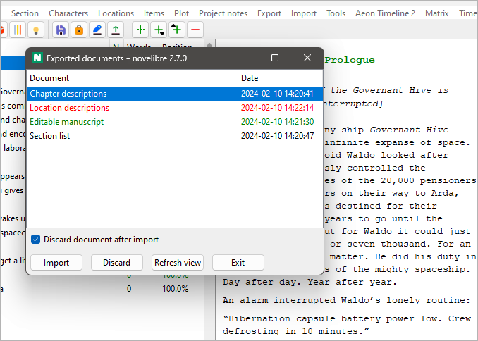

Import menu
Update the project from a previously exported ODF document
With the Import main menu entry, you can open a pop-up window with a list containing previously exported ODF documents that can be reimported, thus updating the current project.
The document types and dates are shown.
Documents that are newer than the project file are highlighted in green.
Documents that cannot be imported because they are open in Writer are highlighted in red.
You can update the project from a document either by double-clicking on the list entry, or by selecting the document and clicking on the Import button.
You can discard documents by selecting them and clicking on the Discard button.
Hint
Discard means: Rename by adding the extension .bak to the file name.
After closing a listed document in Writer while the Exported documents window is open, you can click on the Refresh view button.
Discarding documents after updating the project
Documents with split sections are always automatically discarded after reimport in order to avoid confusion about the changed section or chapter structure. Concerning reimported documents that do not require modifying the project structure, you have three choices:
- Discard documents only when sections are split
This is the default behavior. The ODF documents are kept for future use.
- Always discard documents after import
After updating the novelibre project from an reimported ODF document, this document is automatically discarded.
- Import documents even if locked; do not discard
This is for fast and frequent project updates while keeping the ODF documents open in Writer or Calc for editing.
Important
If you split sections in your ODT document, you cannot import it while open in Writer. This is because novelibre cannot discard it when locked by Writer.